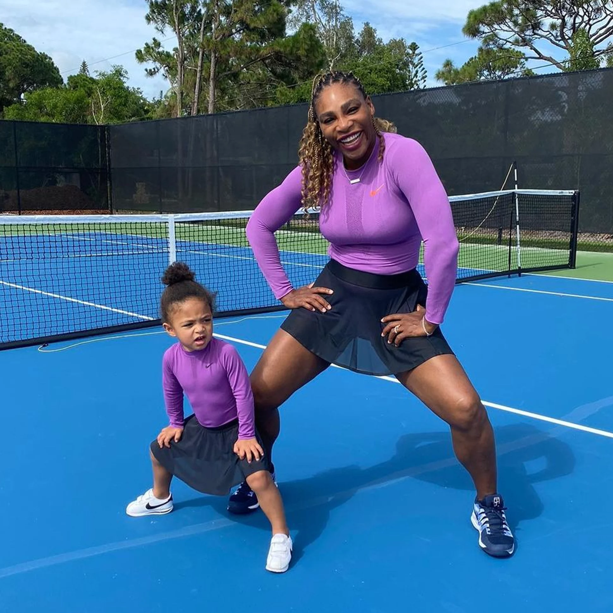
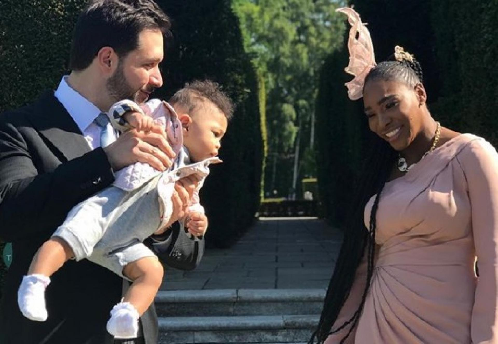
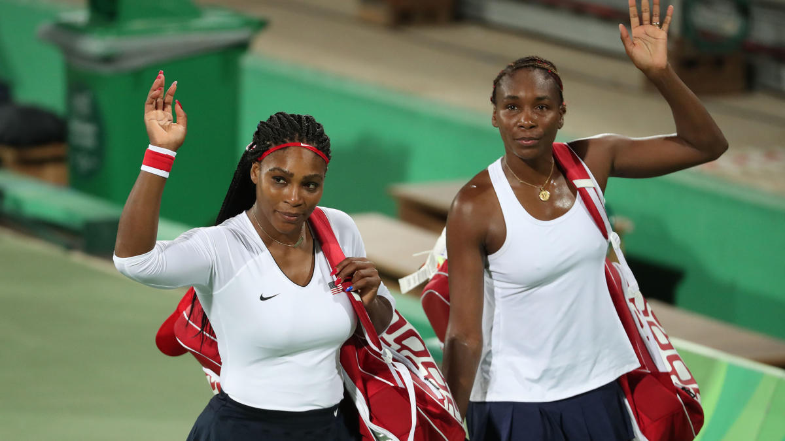

 In September of 2017 Serena had Alexis, and the little one is her mini-me. Serena spends as much time with her girl as humanly possible
 Serena has a husband named Alexis Ohanian. The couple, who got engaged in December 2016 and married in November 2017, share one daughter together, and it's clear that she is her parents' whole world.
 Serena's sister is just as well-known as she is. Both Serena and Venus have entered their forties but they still work hard and push each other. Serena and Venus have always had a strong bond and that will likely never change.